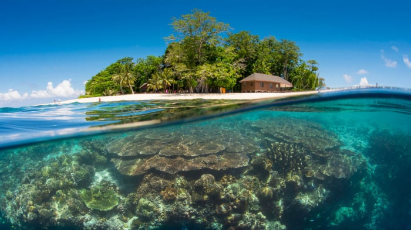

Far from the noise of cities and tucked deep within the Celebes Sea, there lies a small
piece of paradise — Pulau Sipadan Resort. It’s not just a place to stay. It’s where dreams
drift with the tide, and nature speaks in colors too vivid for words.

Drifting gently above a kaleidoscope of coral, snorkeling at Pulau Sipadan feels like
entering another world. As your face dips beneath the surface, you're greeted by a bustling
city of life — reef fish darting between anemones, giant clams pulsing with color, and sea
turtles gliding peacefully below.
Unlike many places, Pulau Sipadan’s reefs are not just alive — they are thriving. Floating
there, surrounded by nature’s masterpiece, time seems to pause. It’s not just snorkeling —
it’s an unforgettable connection to one of the richest marine ecosystems on Earth.
